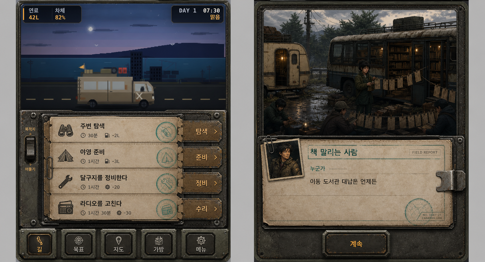
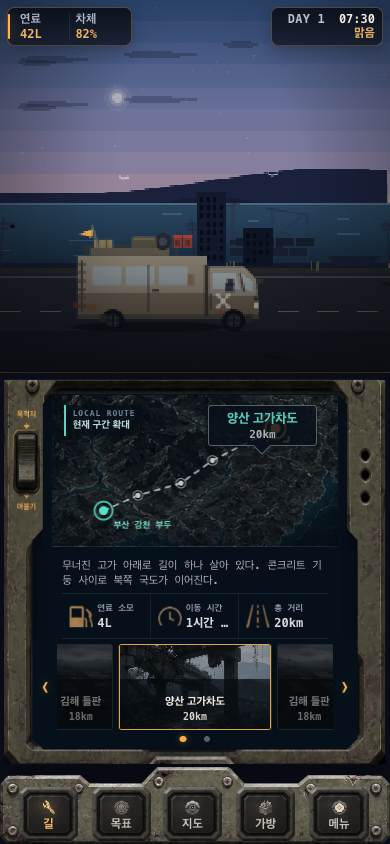
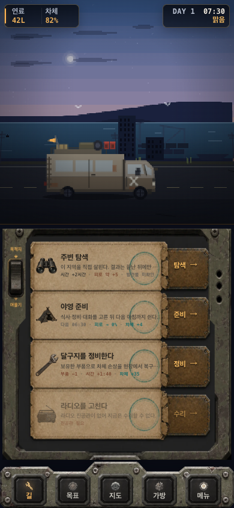
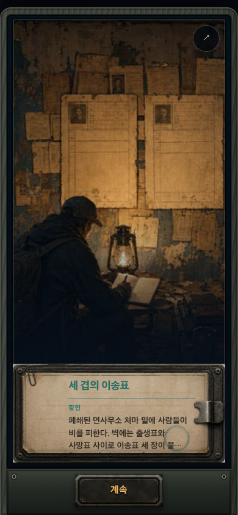
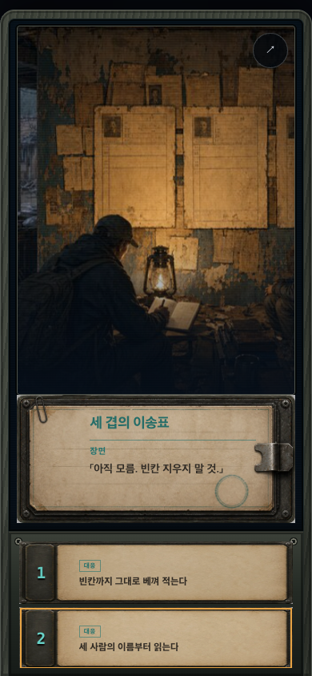
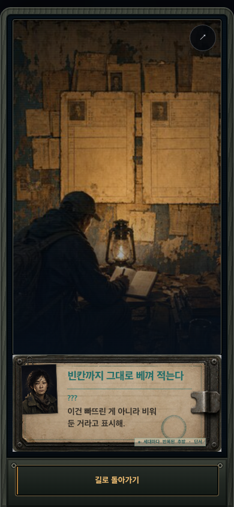

Option 2 구현 QA · 같은 쉘, 의미 있는 행, 끊기지 않는 사건 기록지
원본 디자인과 실제 Chrome 390×844 렌더를 같은 보드에서 비교한다.
승인된 Option 2 원본

길 ↔ 머물기 · 외곽 크기와 위치 동일
길 · 실제 게임
머물기 · 설명과 확정 효과
사건 · 시작부터 결과까지 동일한 기록 장치
1/4 · 장면 기록
선택 · 기록지 유지
결과 · 이전 UI 복귀 없음